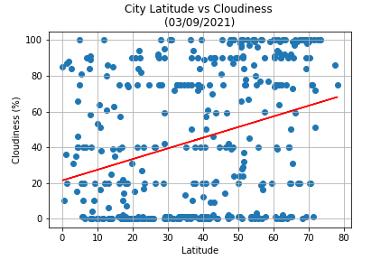
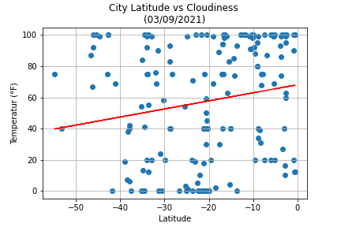

In this plot we see no correlation bewteen latitude and cloudiness. Perhaps the data would show different with more data from other cities around the world. Another possible comparison would be between wind speed and cloudiness.
Cloudiness (%)
Cloudiness by Hemisphere
Northern Hemisphere
Southern Hemisphere Hemisphere
With the data seperated by hemisphere we see there are significantly more cities in the northern hemisphere than in the southern hemisphere. Both plots show no correlation between latitude and cloudiness.